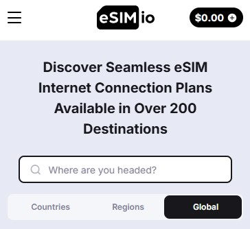

איך לשמור על המספר הישראלי בחו"ל במינימום עלות? ✈️

שתפו את המדריך עם חברים
שתפו את המדריך עם חברים
נמאס לכם לשלם מאות שקלים על חבילות סלולר יקרות? הנה השיטה המקצועית שתאפשר לכם לבצע שיחות נכנסות בחו"ל בחינם, לשמור על זמינות מלאה במספר האישי שלכם, ולהשתמש בוואטסאפ כאילו מעולם לא עזבתם את הארץ.
כדי שהשיטה תעבוד, אתם חייבים חיבור אינטרנט קבוע. הדרך הזולה ביותר היא eSIM של Airalo. זה חוסך את התלות ב-Wi-Fi ציבורי ואת הצורך בחיפוש סים מקומי.

🎁 בונוס: $3 הנחה עם הקוד: GILAD6564
הורדת אפליקציית Airalo והפעלת הנחהנרשמים ל-Zadarma ורוכשים מספר ישראלי וירטואלי (077/03) בעלות של כ-$2 לחודש. זהו ה"צינור" שיקבל את השיחות שלכם. לאחר הרכישה, מורידים את אפליקציית Zadarma ומגדירים את ה-SIP (פרטי החיבור) שתקבלו במייל.
מעכשיו, כל מי שיחייג למספר שקניתם, יגרום לטלפון שלכם לצלצל בחו"ל על בסיס האינטרנט של ה-eSIM.
זהו השלב הקריטי. לפני ההמראה, אתם מנחים את רשת הסלולר שלכם בישראל להעביר את כל השיחות למספר שקניתם בזדארמה.
מחייגים מהנייד שלכם: *21*המספר_של_זדארמה# ולוחצים על חיוג. זהו! הפניית השיחות מופעלת.
💡 הטיפ המשפחתי: ניתן להפנות כמה מספרי טלפון (של כל המשפחה) לאותו מספר וירטואלי אחד. כולם מתקינים את האפליקציה עם אותו יוזר, ומי שזמין עונה!
כמה זה באמת עולה? רכישת המספר עולה כ-$2. קבלת השיחה באפליקציה בחו"ל היא בחינם. העלות היחידה היא שיחה מקומית מהמספר שלכם למספר הוירטואלי (ברוב התוכניות בישראל זה כלול בחבילת ה"ללא הגבלה").
איך מבטלים כשחוזרים? פשוט מאוד: מחייגים ##21# ולוחצים על חיוג. כל ההפניות מבוטלות מיד.
לפני שטסים, כדאי לוודא שיש לכם את הכיסוי המקיף ביותר במחיר המשתלם ביותר. השוו חבילות ביטוח נסיעות עכשיו.
להשוואת חבילות ביטוח נסיעותנכתב על ידי צוות המומחים של Trempico - נסיעות שיתופיות בישראל